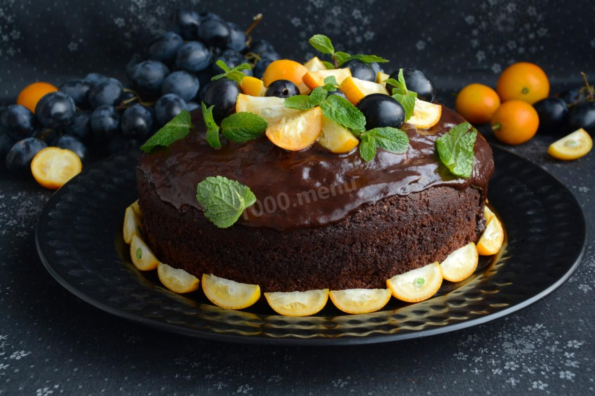

Шоколадный торт

Что такое шоколадный торт? Рецепт может быть различным, и о том, какой из них является правильным, ведутся многие споры. Дело в том, что оригинальная технология приготовления многих из них достаточно сложна, чтобы её можно было в точности воспроизвести на домашней кухне. Поэтому большинство из них были изменены. То, что у нас принято называть шоколадным тортом, в Америке или Европе считается тортом с добавлением порошка какао.
Вам понадобится:
Темный шоколад(300г) Сливочное масло(150г) Пшеничная мука (50г) Сахар(140г) Ванильный сахар(1 чайная ложка) Куриное яйцо(3шт) Клубника (500г) Свежая мята (по вкусу)
Приготовление:
- Просейте муку и смешайте с сахаром. Добавьте по одному яйца и взбейте.
- Растопите шоколад на водяной бане и добавьте в мучную смесь. Перемешайте.
- На дно круглой формы выложите бумагу для запекания, смажьте сливочным маслом и влейте тесто.
- Поставьте в духовку на 15 минут. Достаньте и остудите.
- Клубнику нарежьте ломтиками и выложите на корж.
- Для глазури растопите на водяной бане шоколад и залейте торт. Украсьте листиками мяты.